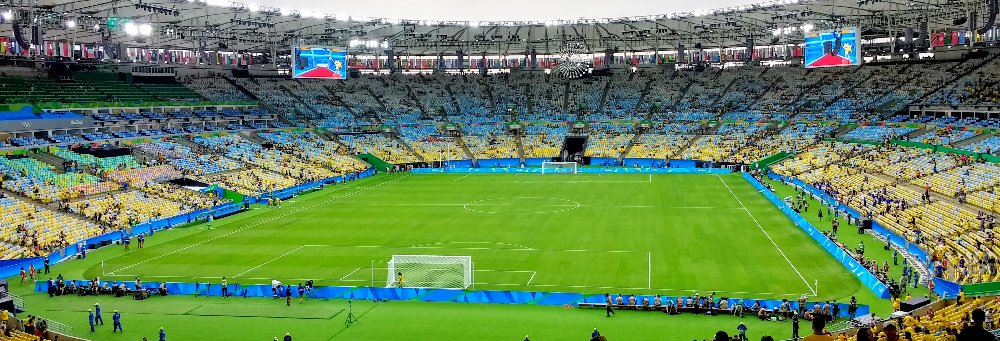

O Estádio Jornalista Mário Filho é um daqueles lugares em que a história do futebol pode ser contada a partir do próprio gramado. Seleção Brasileira, Flamengo, Fluminense, Vasco, Botafogo, Pelé, Didi, Zico, Neymar, campeões mundiais, campeões continentais e multidões que hoje parecem inimagináveis passaram pelo estádio desde sua inauguração.
Mais do que uma arena esportiva, o Maracanã tornou-se parte da identidade do Rio de Janeiro. O estádio está ligado à paisagem urbana, às rivalidades cariocas, à cultura das arquibancadas e a alguns dos episódios mais conhecidos do esporte mundial. O reconhecimento ultrapassa o futebol: o complexo é tombado como patrimônio e aparece entre os pontos turísticos de referência da cidade.
Sua trajetória também ajuda a contar a transformação dos grandes estádios. O Maracanã das arquibancadas gigantescas e da antiga geral deu lugar a uma arena com assentos individuais, setores definidos, nova cobertura e capacidade muito inferior àquela que permitiu públicos próximos de 200 mil pessoas. A estrutura mudou profundamente. A dimensão histórica, não.
Como nasceu o estádio
A construção começou em 10 de agosto de 1948, nos terrenos do antigo Derby Club, com um objetivo muito claro: preparar o Rio de Janeiro para receber a Copa do Mundo de 1950. O projeto iniciou com uma ambição monumental e previa uma arena capaz de acomodar uma quantidade de torcedores sem paralelo no futebol brasileiro da época.
A inauguração oficial ocorreu em 16 de junho de 1950. Os registros históricos preservados pelo Arquivo Nacional e pela Biblioteca Nacional mostram que a primeira partida foi realizada no dia seguinte, 17 de junho, entre seleções de jogadores do Rio de Janeiro e de São Paulo. Os paulistas venceram por 3 a 1, mas o primeiro gol marcado no novo estádio pertenceu a Didi, então jogador do Fluminense.
O Maracanã ainda estava dando seus primeiros passos quando, em 24 de junho, recebeu Brasil x México pela Copa do Mundo. A Seleção venceu por 4 a 0 e abriu no estádio uma relação com os Mundiais que produziria capítulos completamente opostos: a marca esportiva brasileira de 1950 e a consagração alemã de 2014.
A origem do nome
Oficialamente é Estádio Jornalista Mário Filho. A denominação homenageia Mário Rodrigues Filho, personagem fundamental da imprensa esportiva brasileira e defensor da construção da grande arena no local escolhido.
O estádio, porém, não recebeu esse nome desde o primeiro dia. Ele foi inaugurado como Estádio Municipal do Rio de Janeiro e só em 1966, depois da morte de Mário Filho, passou a carregar oficialmente o nome do jornalista.
O apelido Maracanã já era utilizado desde a época da construção e acabou se tornando muito mais conhecido internacionalmente. A origem está ligada à região: o nome popular veio do bairro e do Rio Maracanã. O próprio nome do rio remete ao maracanã-guaçu, ave que existia na região.
Poucos estádios conseguiram transformar um apelido geográfico em uma marca esportiva mundial com tanta força. Para diferentes gerações de torcedores, dizer simplesmente “Maracanã” já é suficiente.
O jogo que transformou o estádio em palco mundial
Nenhuma partida está tão ligada à história do Maracanã quanto Brasil x Uruguai, disputado em 16 de julho de 1950.
Existe uma correção importante em relação à maneira como o confronto costuma ser apresentado. Tecnicamente, não se tratava de uma final convencional. A Copa do Mundo de 1950 terminou com um quadrangular decisivo formado por Brasil, Uruguai, Espanha e Suécia. Os resultados das rodadas anteriores fizeram com que Brasil e Uruguai chegassem ao último jogo disputando diretamente o título. O empate bastava aos brasileiros.
Friaça marcou para o Brasil no início do segundo tempo. Juan Schiaffino empatou aos 21 minutos da etapa final, e Alcides Ghiggia virou aos 34. O 2 a 1 deu aos uruguaios seu segundo título mundial e produziu o episódio que ficaria conhecido como Maracanazo.
A história do Uruguai nas Copas passa diretamente por esse jogo, resultado que transformou aquela seleção em personagem definitivo da memória do estádio.
O impacto foi ampliado pelo tamanho do público e pela expectativa criada em torno da Seleção Brasileira. O país estava preparado para celebrar o título em casa. O Maracanã havia sido construído justamente para colocar o Brasil no centro do futebol mundial. Em vez da festa planejada, o estádio recebeu um dos silêncios mais famosos da história do esporte.
O recorde de público
Os números do Maracanazo exigem cuidado porque diferentes registros históricos usam critérios distintos para público oficial, pagantes e quantidade estimada de pessoas dentro do estádio.
A FIFA registra 173.850 espectadores como público oficial de Brasil x Uruguai e considera esse o maior público da história de uma partida de Copa do Mundo. A própria entidade acrescenta que se acredita que mais de 200 mil pessoas estivessem dentro do Maracanã naquele 16 de julho.
A dimensão do episódio permanece extraordinária mesmo adotando apenas o número oficial da FIFA: nenhum outro jogo de Copa do Mundo reuniu público superior.
O maior artilheiro da história do Maracanã
Entre tantos craques que construíram suas carreiras no estádio, nenhum marcou mais gols naquele gramado do que Zico. Um dos maiores ídolos da história do Flamengo soma 334 gols no estádio, marca que o coloca de forma isolada no topo da artilharia do principal palco do futebol brasileiro.
A relação do Galinho com o estádio vai muito além da artilharia. Zico disputou 435 partidas no Maracanã e transformou o gramado em um dos grandes cenários de sua carreira. Foi ali que participou de clássicos, decisões estaduais, partidas nacionais e noites que ajudaram a consolidar sua imagem na história rubro-negra.
Zico também estabeleceu outro recorde no estádio. Em 1979, marcou seis gols na vitória do Flamengo por 7 a 1 sobre o Goytacaz, desempenho apontado como a maior quantidade de gols de um jogador em uma única partida no Maracanã.
O clube que mais jogou no “Maraca”
Se Zico ocupa o topo entre os goleadores, o Flamengo aparece como o clube que mais vezes entrou em campo no estádio.
A ligação rubro-negra atravessa praticamente toda a história do palco carioca. Em 2021, na partida contra o ABC pela Copa do Brasil, o Flamengo chegou ao jogo de número 2.100 no Maracanã.
Antes daquela partida, o levantamento histórico apontava 2.099 apresentações rubro-negras no estádio, com 1.155 vitórias, 509 empates e 435 derrotas.
A marca continuou crescendo nas temporadas seguintes. Em 2023, o Flamengo completou 300 partidas somente no chamado “novo Maracanã”, considerando o período iniciado após a grande reforma e a reabertura de 2013.
Outro número ajuda a dimensionar essa relação. Em 2025, o clube chegou à marca de 1.000 partidas no Maracanã apenas pelo Campeonato Carioca.
O total histórico de jogos do Flamengo no estádio já é, portanto, superior às 2.100 partidas alcançadas em 2021.
O Fla-Flu e o recorde entre clubes
O gigantismo das antigas arquibancadas não apareceu apenas em jogos da Seleção. Em 15 de dezembro de 1963, Flamengo e Fluminense disputaram no Maracanã uma partida que entrou para a história dos clássicos.
Segundo o registro histórico do Flamengo, 194.603 pessoas estiveram no estádio, sendo 177.020 pagantes. O Fla-Flu terminou 0 a 0 e deu ao Flamengo o título do Campeonato Carioca, já que o clube tinha a vantagem do empate. O confronto é tratado pelos próprios clubes como recorde mundial de público em uma partida entre clubes.
Esse jogo ajuda a explicar por que a expressão “Clássico das Multidões” se encaixou tão bem no Fla-Flu e por que o Maracanã se tornou muito mais do que o campo de uma única torcida.
Durante décadas, rubro-negros, tricolores, vascaínos e botafoguenses construíram relações próprias com o estádio. O Maracanã funcionou como grande território comum do futebol carioca, especialmente em clássicos e decisões estaduais capazes de mobilizar a cidade inteira.
O milésimo gol do Rei
Outra imagem inseparável da história do estádio é a de Pelé comemorando seu gol mil.
Em 19 de novembro de 1969, Santos e Vasco se enfrentaram pela Taça de Prata. Pelé marcou de pênalti contra o goleiro argentino Andrada e atingiu a marca contabilizada à época como o gol número 1.000 de sua carreira. O Santos venceu a partida por 2 a 1.
Independentemente das discussões modernas sobre critérios estatísticos para contabilização de amistosos e partidas não oficiais na carreira do Rei, o episódio de 1969 permanece como um dos momentos mais conhecidos de sua trajetória.
Era natural que um marco desse tamanho acontecesse justamente no Maracanã. O estádio havia se transformado, em menos de duas décadas de existência, na grande vitrine do futebol brasileiro.
O retorno de uma Copa do Mundo
Sessenta e quatro anos depois do Mundial de 1950, o Maracanã voltou a receber um Mundial.
O estádio de 2014 já era profundamente diferente daquele que havia recebido o Maracanazo. A modernização realizada para os grandes eventos internacionais alterou arquibancadas, acessos, cobertura e praticamente toda a experiência do público. A antiga geral já havia desaparecido em reformas anteriores, quando setores em que os torcedores acompanhavam as partidas em pé foram substituídos por cadeiras.
Em 13 de julho de 2014, Alemanha e Argentina entraram no gramado para disputar o título mundial. Após 90 minutos sem gols, a decisão foi para a prorrogação.
Mario Götze, que havia entrado durante a partida, recebeu cruzamento de André Schürrle, dominou no peito e finalizou de esquerda para marcar o único gol da decisão. A Alemanha venceu por 1 a 0 e conquistou sua quarta Copa do Mundo.
A trajetória alemã nas Copas do Mundo ajuda a explicar o peso daquele título no Maracanã, conquistado depois de uma campanha que também teve o histórico 7 a 1 sobre o Brasil na semifinal.
Com isso, o estádio que em 1950 testemunhara um dos maiores traumas da Seleção Brasileira passou a ter também a imagem de outra seleção levantando a Copa do Mundo em seu gramado.
Outra final marcante
Entre as grandes decisões internacionais do Maracanã moderno está também a final da Copa das Confederações de 2013.
Em 30 de junho, o Brasil enfrentou uma Espanha que chegava como campeã da Copa do Mundo de 2010 e das Eurocopas de 2008 e 2012. A Seleção Brasileira venceu por 3 a 0. Fred marcou duas vezes, e Neymar também deixou seu gol.
A atuação se tornou uma das principais lembranças daquela geração da Seleção antes da Copa de 2014. Também mostrou que, mesmo completamente remodelado, o Maracanã continuava capaz de produzir noites de enorme pressão esportiva e atmosfera de decisão.
O primeiro ouro olímpico do Brasil
Em 20 de agosto de 2016, o Maracanã recebeu outro capítulo decisivo da história da Seleção Brasileira.
Brasil e Alemanha disputaram a final do torneio masculino dos Jogos Olímpicos do Rio. Neymar abriu o placar em cobrança de falta aos 27 minutos. Max Meyer empatou aos 14 do segundo tempo. O 1 a 1 permaneceu durante a prorrogação, levando a decisão para os pênaltis.
Depois de quatro cobranças convertidas por cada seleção, Weverton defendeu o pênalti de Nils Petersen. Neymar ficou com a cobrança seguinte e marcou o gol que fechou a disputa em 5 a 4. Era a primeira medalha de ouro olímpica do futebol masculino brasileiro.
A conquista carregava uma simbologia enorme. O Brasil já tinha cinco Copas do Mundo, mas nunca havia vencido o torneio olímpico masculino. A lacuna foi fechada justamente no estádio mais associado à história da Seleção.
O Maracanã também recebeu as cerimônias de abertura e encerramento dos Jogos Olímpicos do Rio, ampliando sua importância para além das partidas de futebol.
A principal casa histórica da Seleção Brasileira
A relação com o Maracanã vai muito além das grandes finais. Pela contagem da CBF, nenhum estádio recebeu tantas partidas da Amarelinha ao longo da história.
Até o fim de 2025, o Brasil havia disputado 119 jogos. Em 31 de maio de 2026, a goleada por 6 a 2 sobre o Panamá, em amistoso de preparação para a Copa do Mundo, tornou-se a 120ª apresentação da Seleção Brasileira no estádio.
A marca reforça o papel do Maracanã como principal palco histórico da equipe nacional. Ao longo das décadas, o estádio recebeu partidas de Copa do Mundo, Eliminatórias, Copa América, Copa das Confederações, amistosos e outras competições internacionais, tornando-se cenário recorrente de diferentes gerações da Seleção.
O Maracanã como palco da Libertadores
A história internacional do estádio não pertence apenas às seleções.
Já recebeu finais da Libertadores em diferentes períodos e formatos. Uma das mais emblemáticas da era das decisões em jogo único aconteceu em 30 de janeiro de 2021, quando Palmeiras e Santos disputaram a final referente à edição de 2020 da competição, adiada em razão do calendário afetado pela pandemia.
Breno Lopes marcou nos acréscimos do segundo tempo e deu ao Palmeiras a vitória por 1 a 0 e o título continental.
Em 4 de novembro de 2023, o estádio recebeu uma decisão ainda mais ligada à sua própria história. O Fluminense enfrentou o Boca Juniors em busca da primeira Libertadores de sua história.
Germán Cano abriu o placar para o time carioca, Luis Advíncula empatou para o Boca e levou a decisão à prorrogação. John Kennedy marcou o gol da vitória por 2 a 1, fazendo do Tricolor carioca campeão continental pela primeira vez.
Foi um daqueles momentos em que estádio, clube e competição se misturaram. Um dos principais usuários históricos do Maracanã conquistava em seu gramado a maior taça continental de sua trajetória.
A gestão do estádio atualmente
Em 27 de setembro de 2024, o Governo do Estado do Rio de Janeiro e o consórcio formado por Flamengo e Fluminense assinaram o contrato de concessão do Complexo Maracanã por 20 anos. O acordo envolve administração, operação e manutenção do estádio e do Maracanãzinho por meio da Fla-Flu Serviços S.A.
Flamengo e Fluminense já participavam da operação do complexo antes da concessão definitiva, mas o contrato estabeleceu uma perspectiva de longo prazo para a gestão.
Isso não apaga a relação histórica do estádio com Vasco, Botafogo e a própria Seleção Brasileira. O estádio continua tendo uma dimensão esportiva maior do que seus administradores ou mandantes de uma determinada temporada.
A transformação do “velho Maracanã”
Comparar imagens do estádio de 1950 com fotografias atuais é quase comparar duas arenas diferentes.
Antes das diversas reformas, foi concebido para multidões. Arquibancadas extensas, setores populares e a famosa geral permitiam uma concentração de público incompatível com os padrões modernos de segurança, conforto e operação.
Uma reforma realizada entre 2005 e 2006 já havia eliminado a antiga geral, substituindo o setor por cadeiras. A transformação se aprofundou na preparação para os grandes eventos da década seguinte.
A configuração moderna do Maracanã tem capacidade oficial para 77.638 espectadores, muito distante das multidões registradas no século passado. A comparação direta entre épocas, portanto, precisa considerar que não se trata apenas de uma mudança de demanda: a própria estrutura física e a forma de acomodar o público foram completamente alteradas.
É justamente essa diferença que faz os antigos públicos do estádio parecerem tão extraordinários. Um Fla-Flu com mais de 190 mil presentes ou um Brasil x Uruguai com estimativas superiores a 200 mil pertencem a uma realidade que o futebol contemporâneo não pretende reproduzir.
A representatividade para o futebol carioca
O Maracanã nunca teve uma identidade emocional restrita a apenas um clube.
Flamengo e Fluminense construíram uma enorme parcela de sua história no estádio. Vasco e Botafogo também viveram clássicos, títulos, decisões e partidas inesquecíveis no mesmo gramado.
Esse compartilhamento ajudou a formar uma característica rara. Em vez de ser reconhecido internacionalmente apenas como “o estádio de determinado clube”, o Maracanã tornou-se o grande estádio do futebol do Rio de Janeiro.
Também nasceu ali uma cultura de arquibancada própria. Durante décadas, clássicos tiveram configurações de torcida muito diferentes das atuais. A antiga geral, as enormes bandeiras, os rádios de pilha, os vendedores, as caravanas e as multidões que ocupavam os setores muito antes do início das partidas produziram um imaginário que continua associado ao “velho Maraca”.
Os protocolos mudaram. A segurança passou a exigir separação mais rígida entre torcidas em diversos jogos, ingressos ganharam tecnologia, setores foram numerados e o estádio tornou-se muito mais controlado.
Ainda assim, em grandes partidas, permanece algo reconhecível: a chegada das torcidas pelo transporte público, as camisas tomando as ruas próximas, o som crescendo antes do apito inicial e a sensação de que determinados jogos começam muito antes de a bola rolar.
Um estádio marcado por extremos
Poucos lugares concentraram emoções tão opostas.
O Maracanã recebeu o silêncio do Brasil diante do Uruguai em 1950 e a festa brasileira contra a Alemanha em 2016. Viu a Alemanha erguer a Copa do Mundo em 2014 e o Brasil conquistar a Copa das Confederações um ano antes. Foi palco do milésimo gol de Pelé, de públicos próximos de 200 mil pessoas e de títulos que mudaram a história de clubes.
Essa capacidade de acumular acontecimentos de épocas completamente diferentes é uma das razões pelas quais o estádio permanece relevante. O Maracanã de Didi não era fisicamente o mesmo de Pelé. O de Pelé não era o mesmo dos grandes públicos das décadas seguintes. E aquele estádio também mudou antes de receber Götze, Neymar e John Kennedy.
O concreto pode ter sido reformado. A história permaneceu acumulada.
Por que o Maracanã continua único
Existem estádios maiores, mais novos e tecnologicamente mais avançados. Isso não diminui o lugar ocupado pelo Maracanã. Assim como o Mineirão construiu uma história marcada por clássicos, grandes públicos, títulos e jogos históricos, o Maracanã ocupa um espaço próprio na memória do futebol brasileiro.
Sua grandeza não depende apenas da capacidade atual nem da arquitetura. Ela vem da combinação entre relevância esportiva, memória coletiva, localização urbana, rivalidades, jogadores históricos e decisões internacionais.
Ali, o Uruguai protagonizou o Maracanazo. Pelé marcou o milésimo gol. Flamengo e Fluminense disputaram um clássico diante de quase 200 mil pessoas. Zico construiu uma relação única com o estádio e tornou-se seu maior artilheiro, com 334 gols. O Flamengo ultrapassou 2.100 partidas e consolidou-se como o clube que mais vezes atuou no Maracanã. A Alemanha conquistou sua quarta Copa do Mundo. O Brasil finalmente ganhou o ouro olímpico masculino. Palmeiras e Fluminense levantaram a Libertadores em finais disputadas no estádio.
Ao mesmo tempo, o Maracanã segue ativo, recebendo novas gerações e acrescentando capítulos à própria história. Essa vocação vai além do futebol: em 2026, o estádio também entrou na rota da liga de futebol americano, com o jogo da NFL entre Dallas Cowboys e Baltimore Ravens, reforçando a capacidade do palco carioca de receber eventos esportivos de dimensão internacional.
Talvez seja essa a característica que melhor explique sua permanência como símbolo. O Maracanã não é um monumento preservado apenas para lembrar o passado. É um estádio vivo, onde o passado continua presente enquanto novos capítulos são escritos.
Mais de sete décadas depois da inauguração, o Estádio Jornalista Mário Filho permanece como uma referência do Rio de Janeiro e um dos grandes palcos do futebol mundial. Mudaram a capacidade, as arquibancadas, a operação e a experiência do torcedor. O peso de jogar no Maracanã, porém, continua ligado a tudo o que já aconteceu naquele gramado.
E são justamente essas histórias — de multidões, títulos, derrotas, gols decisivos e personagens que atravessaram gerações — que fazem do Maracanã muito mais do que um estádio. Ele é um dos maiores arquivos vivos do futebol brasileiro.